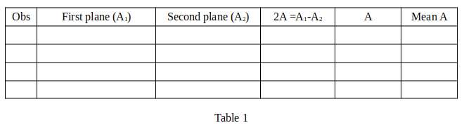

Hover your cursor over the slider handle (1 or 3) and use the up and down arrow keys on the keyboard for fine-tuning. The textbox 2 and 4 can be used for fine adjustment of the telescope and prism table respectively.
First Place the prism in such a way that, the reflected beams by both the prism planes can be observed without rotating the prism.
Record the position of the reflected beams in Table 1 as A1 and A2.
Calculate the prism angle as described in Table 1.
Repeat the same procedure 4 times and calculate the average value of the prism angle.

Now rotate the prism table in such a way that, one of the spectra attains the position of minimum deviation (for example 5~35 degree of prism table).
After fixing the position of the prism, record the position of the direct rays, reflected rays and the refracted rays in Table 2, using the telescope.
Repeat the same for each spectra and tabulate in Table 2.
Plot a μ vs 1/λ2 graph from the experimental data and estimated the minimum deviation of the prism from that.
Wavelengths of the Mercury spectral lines are 420.6 nm, 447.2 nm, 492.2 nm, 501.6 nm, 587.6 nm, 667.8 nm
In the case of direct reading, the telescope reading is 0.